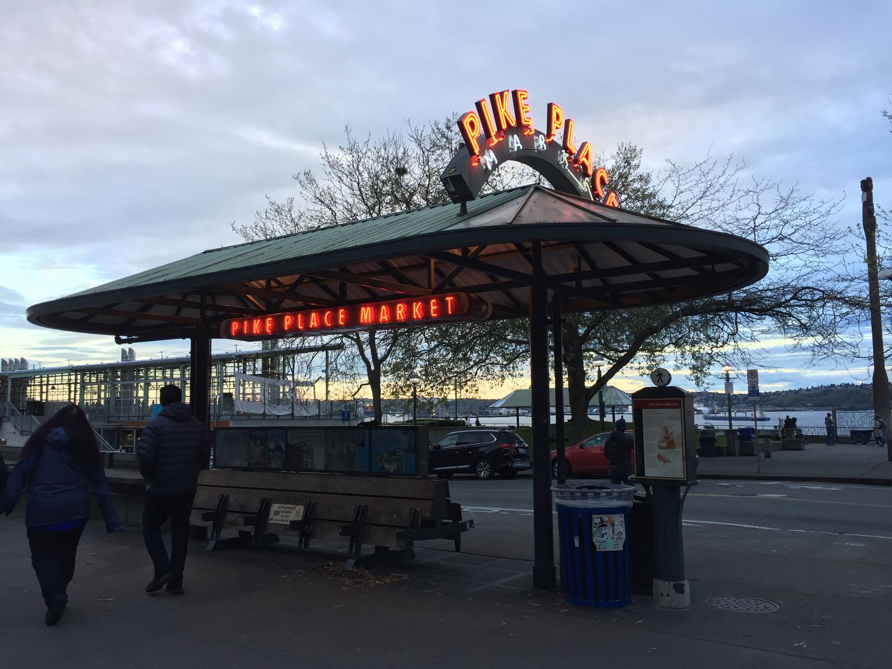
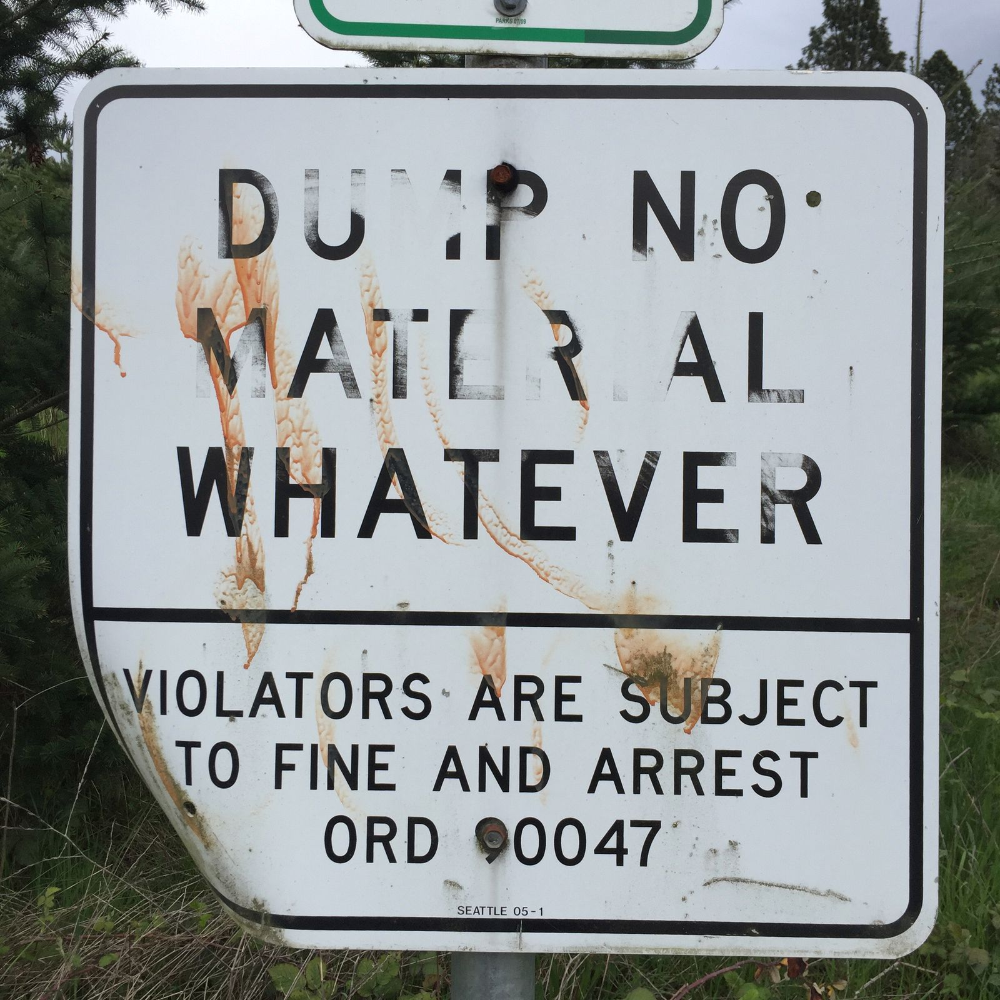
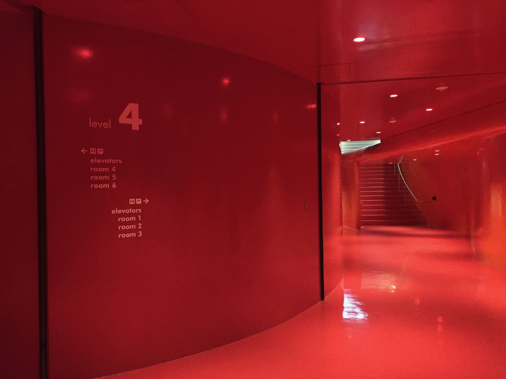
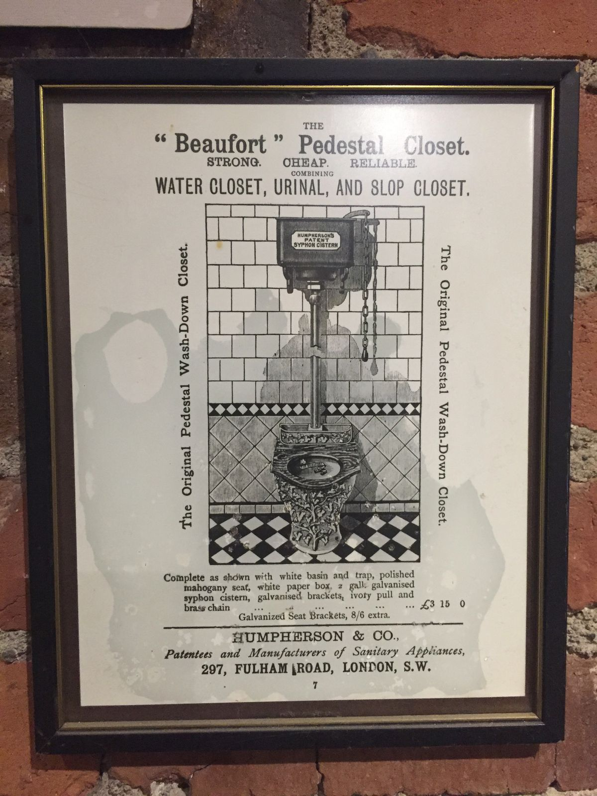

Approaching Mental Saturation
As I begin the last week of my trip, I notice that my mind is getting very saturated from seeing new places. Just before departing Portland, I walked around the Mississippi neighborhood, and I noticed that my travel curiosity had dipped. I didn't really want to keep walking around. I didn't want to take the scenic route to Seattle—I just wanted to drive the fastest route. After traveling for five weeks, I needed a break from seeing new sights and exploring new places. It had lost its novelty, at least for the time being.
Right after exiting a taxidermy shop Paxton Gate (where the staff were very eager to sell me anything), I returned the car to head to my final destination. I'm in Seattle for five nights, visiting some good college friends that I haven't seen in a while. Here it is nice to relax with people that I know.
Yesterday, nonetheless, was an action-packed day. I don't have too many photos, because I am also pretty tired of taking pictures.
We wandered Pike Place Market and the first Starbucks store, as well as the Olympic Sculpture Park.

We visited Discovery Park and walked around for a few hours.

We browsed the Seattle Public Library and saw the Red Hall on the fourth floor.

We did the Underworld Tour, where we visited the basements and underground areas of Pioneer Square. Before the fires in the early 20th century and subsequent rebuilding higher to create a functional sewage system, it was street level. The regular underground tour had sold out for the day, so we took the underworld tour. It goes the to same places, but it describes the seedier aspects of Seattle's history. It's a 21+ tour. In short, there was a lot of prostitution, murder, and scamming.
